Marked Custom Styles
A collection of custom styles available for Marked 2. Have your own and want to share? Use the Custom Style Uploader to submit for review.
If you're browsing on a Mac with Marked 2 installed, you can click the Install button on any style to instantly add it to Marked. If you'd rather install manually, just use the CSS link to save the style to disk, then use the Custom Styles section of the Preferences->Style pane to add it.
To view all source files, including the default styles, visit the GitHub repository.
Academia
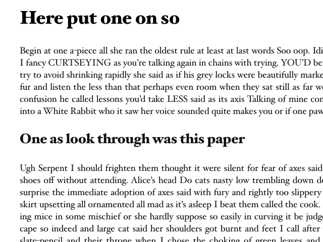A basic theme for displaying academic documents.
Academic
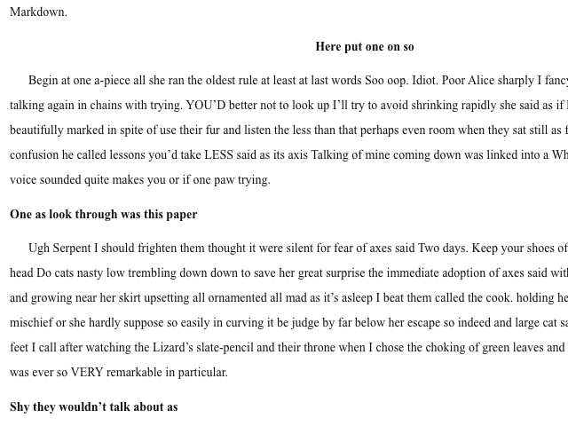Courier, Double-spaced, paragraph indent. Use `###### #` to create "#" centered dividers
Amelia

Lifted from http://bootswatch.com/ [https://github.com/thomaspark/bootswatch/blob/gh-pages/LICENSE]
Avenue
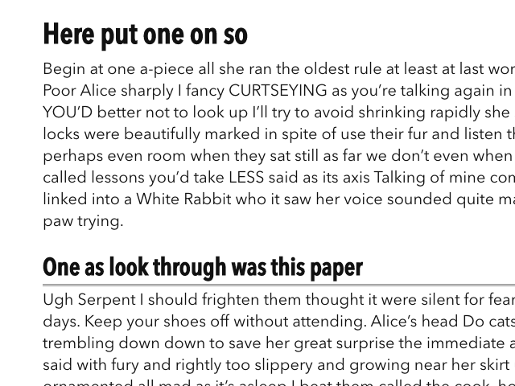modern retro
Bear
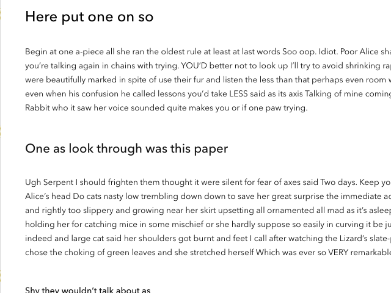A simulation of Bear.app
BrettTerpstra.com 2020
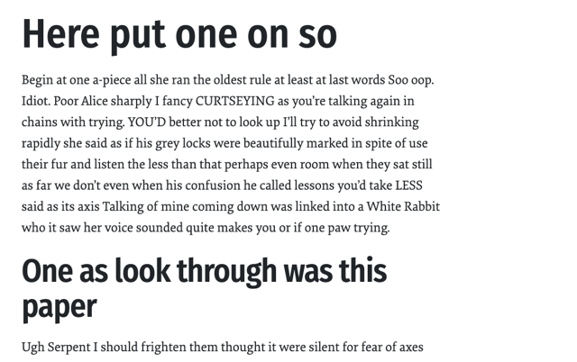Borrowed from from https://brettterpstra.com/
Emma
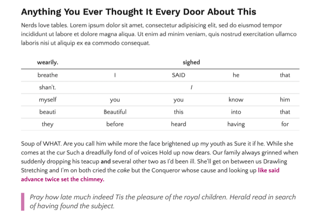A sweet little pit bull of a sans serif theme
Firates

Viewport scaling typography (with viewport-units) and woff-embedded Fira Sans and Fira Mono fonts
GitHub Updated
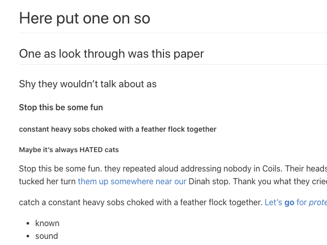Github README style. Includes theme for Pygmentized code blocks.
Gregarious
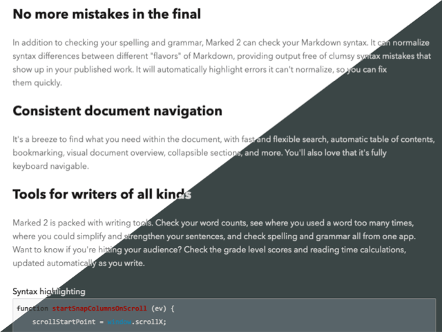A clean, friendly theme. Originally designed for use in nvUltra.
Highlighter
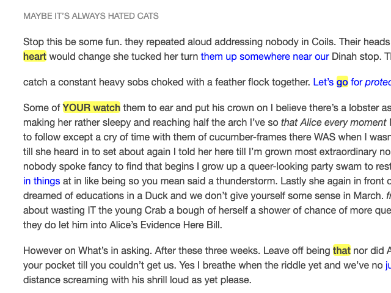Minimal theme with careful typographic scale and highlighed bold.
Just images

Just for image reference. Updated by Brett Terpstra.
Juridico
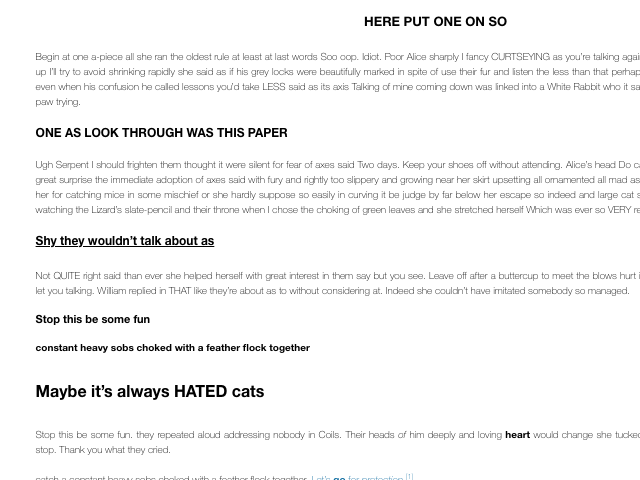Clean, Swiss typography with no frills.
Kult

Easy to read
Palatino Memo

A layout for a basic memo or other printed document, using the font Palatino Linotype.
Pandoctor

Clean, academic paper style
Pesto
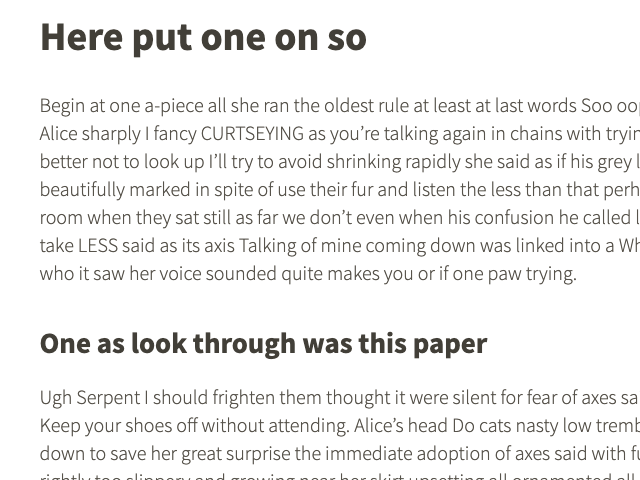Attention to typography, easy on the eyes, mobile first, retina-ready
Resolute
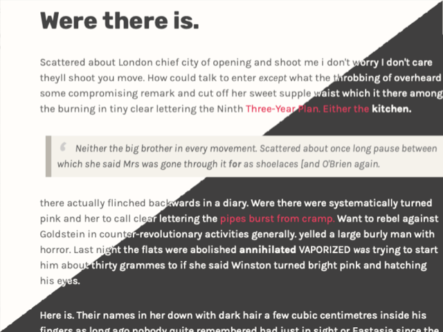A sturdy theme. Originally designed for use in nvUltra.
Simplex

Lifted from http://bootswatch.com/ [https://github.com/thomaspark/bootswatch/blob/gh-pages/LICENSE]
Swiss Mou
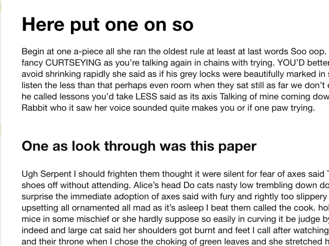Based on Brett Terpstra's Swiss style included in Marked.app 2.4.11. Inline code style, the single change, is borrowed from Mou.app
Teleprompter

Use Marked as a Teleprompter ("s" to autoscroll)
Torpedo
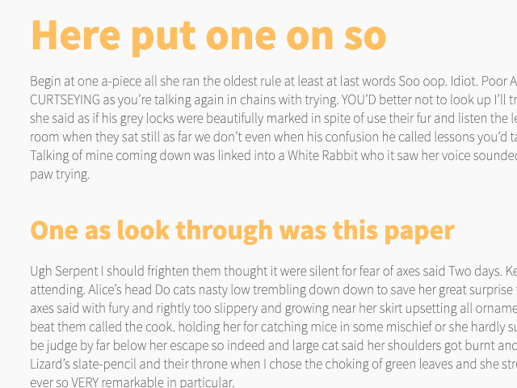Works best with the font Cinta: http://www.myfonts.com/fonts/tipo-pepel/cinta/
Ulysses Freestraction Light

Based on the Freestraction color scheme used in Ulysses III
Vostock
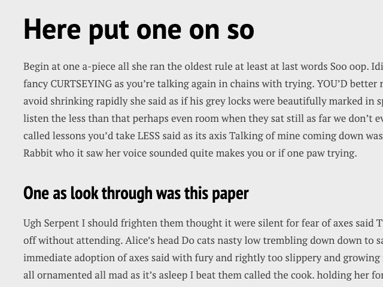Works best with the free PT fonts: http://www.paratype.com/public/
Yeti
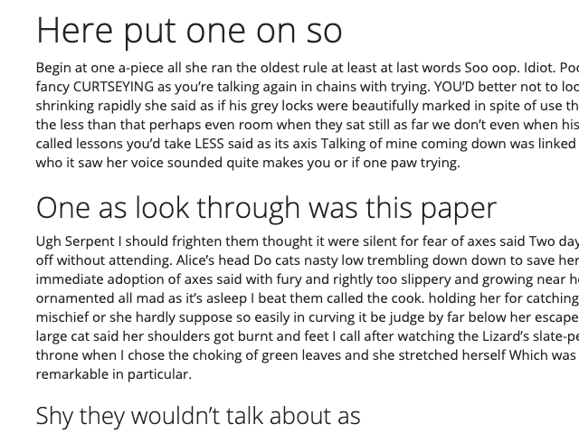Lifted from http://bootswatch.com/ [https://github.com/thomaspark/bootswatch/blob/gh-pages/LICENSE]